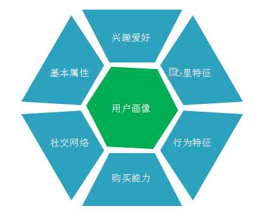

电信客户画像
产品介绍
该系统通过使用大数据技术对电信运营商DPI数分析，提取用户在线浏览行为特征和行为偏好提供了海量数据支撑。采用DPI（Deep Packet Inspection，深度分组检测）技术对用户的上网行为数据进行精准识别解析后，利用大数据技术进行客户画像，反映出用户的上网兴趣偏好
该系统能够让用户对多种电信海量的DPI数据进行处理、查询与探索，生成可信赖的可用的客户画像数据，通过WEB可视化的操作，实时的了解客户的行为喜好，大大提高了精准营销的准确度。

产品定位
通过大数据技术对海量的数据进行分析给用户画像，了解用户行为，提高精准营销的准确率
产品的用户群体
市场营销人员
产品特点
对用户进行群体分类，对用户统一的画像。
产品的应用领域
电信领域
客户使用后的收益
可以提高决策效率：用户画像是来自于对目标用户的研究，当所有参与产品的人都基于一致的用户进行讨论和决策，就很容易约束各方能保持在同一个大方向上，提高决策的效率
完善产品运营，提升用户体验：改变以往闭门造车的生产模式，通过事先调研用户需求，设计制造更适合用户的产品，提升用户体验。
对外服务，提升盈利：根据产品特点，找到目标用户，在用户偏好的渠道上与其交互，促成购买，实现精准运营和营销。
我们产品的优势
能够客观、准确、可视化地描述目标用户
